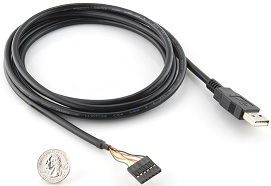
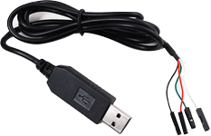
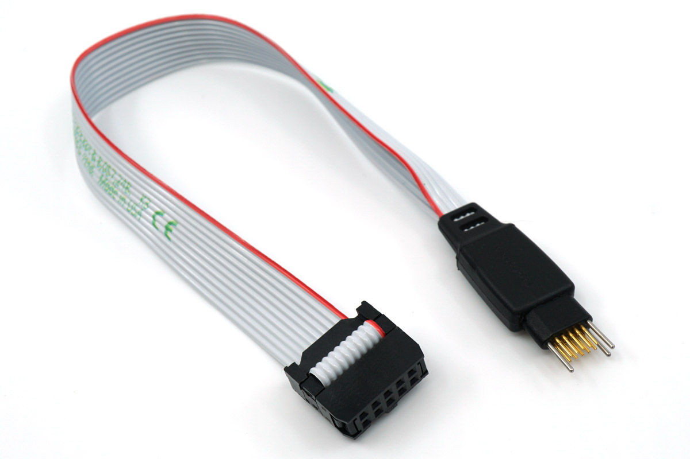
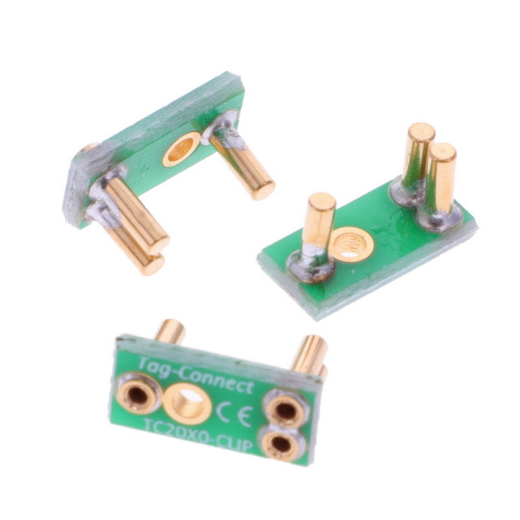
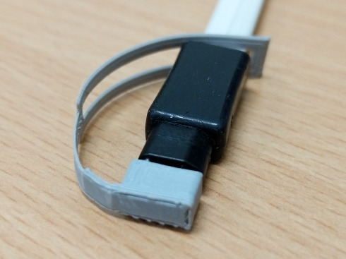
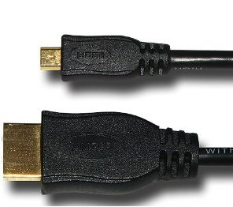

Cables#
USB Data/Power Cables#
For all Beagles, there is a USB client, also called gadget, capable connection that will enable you to create network, serial and data storage connections from a host computer.
In most cases, you can also provide power over this same cable.
In most cases, you can also use the port in a host mode, also sometimes called on-the-go to refer to when a device that is typically a client can also act as a host.
Cable included?#
A USB (High-speed A to Mini-B) cable will normally be supplied with BeagleBone Black. For other boards, you’ll have to procure your own USB cable.
What cable is needed?#
The type of cable you have to procure is listed in the table below:
Board |
USB |
Host capable? |
Power required [2] |
|---|---|---|---|
BeagleY-AI |
High-speed USB-C |
Unsupported |
1000mA |
BeaglePlay |
High-speed USB-C |
Yes [1] |
500mA |
BeagleV-Fire |
High-speed USB-C |
Yes [1] |
750mA |
BeagleV-Ahead |
Super-speed Micro-AB |
Yes |
900mA |
BeagleBone AI-64 |
Super-speed USB-C |
Yes [1] |
3000mA |
BeagleBone AI |
Super-speed USB-C |
Yes [1] |
900mA |
BeagleBone Black |
High-speed Mini-AB |
Yes |
500mA |
BeagleBone Blue |
High-speed Micro-AB |
Yes |
500mA |
BeagleBone Black Wireless |
High-speed Micro-AB |
Yes |
500mA |
BeagleBone (original) |
High-speed Mini-B |
No |
500mA |
BeagleBoard-xM |
High-speed Micro-AB |
Yes |
500mA |
BeagleBoard-X15 |
High-speed Micro-B |
No |
N/A |
PocketBeagle |
High-speed Micro-AB |
Yes |
500mA |
Important
BeagleBoard-X15 cannot be powered over the USB port.
Serial Debug Cables#
The default serial port settings for Beagles are:
Setting |
Value |
|---|---|
Baud |
115,200 |
Bits |
8 |
Parity |
N |
Stop Bits |
1 |
Handshake |
None |
Molex picoblade serial cables#
These cables are not active (only wires and connector) and provide an interface between USB to Serial converter cables such as the ones listed below and serial debug ports on Beagles such as BeagleBone AI and AI-64. You can purchase these cables from different sources including:
Note
BeagleBone AI and BeagleBone AI-64 UART debug port uses a 3pin Molex PicoBlade (1.25mm) connector. Raspberry Pi UART debug port uses a 3pin JST-Sh (1.00mm) connector. The connectors and the cables for both the connector types may look very similar but they are very different. Make sure to check connector type before buying cables because they are incompatible with each other.
Standard FTDI Cable#
The debug cable is a standard FTDI to TTL cable. Make sure you get the 3.3V version! It can purchased from several different sources including but not limited to:
Other options with different USB to Serial ICs exist and will work as well, such as CP2102, CH340G etc but may require additional drivers depending on your operating system.
Pin 1 on the cable is the black wire and connects to pin 1 on the board. (the pin with the white dot next to it)
Adafruit 4 Pin Cable (CP2102)#
Adafruit 4-pin serial cable (SiLabs CP2102 based, boards older than 2017 use a Prolific chipset instead)
Board |
Wire |
|---|---|
Pin 1 (GND) |
Black (GND) |
Pin 4 (RX) |
Green (TX) |
Pin 5 (TX) |
White (RX) |
Note
The naming of the signals reflect those of the cable. The swapping of TX and RX takes place on the board.
You will also find an extra RED wire on this cable that supplies 5V @ 500mA which could power the board if connected to one of the VDD_5V pins. It’s recommended that you leave it unconnected.
JTAG debug Cables#
TagConnect (JTAG)#
Boards like BeagleConnect Freedom, BeagleV-Ahead, BeagleV-Fire, and BeaglePlay use the TagConnect interface which allows you to perform firmware updates and JTAG hardware debugging. To use the interface, the the parts below from tag-connect are required.
Note
You need both the cable and the retaining clip to properly use/connect the cable with the boards. There is an option to 3D print protective cap and retaining cap which you can try.
TC2050 debug cable#
{kind=link}
TC2050 retaining clip#
{kind=link}
3D printable cap & clip (Optional)#
{kind=link}
HDMI Cables#
Working HDMI Cables#
The BeagleBone Black uses a microHDMI cable.
microHDMI to VGA#
miniDP to HDMI#
Working miniDP to HDMI Adapters#
Note
BeagleBone-AI64 requires an ACTIVE Mini DisplayPort to HDMI cable or adaptor to work, a passive miniDP to HDMI setup will not work at all.